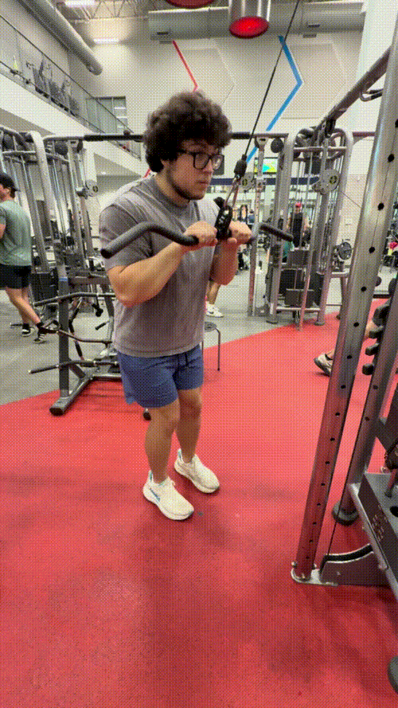

Tricep Pushdown


How to Perform
Stand facing the cable machine and grip the attachment with your hands. Keep your elbows close to your sides and brace your core.
Push the attachment downward by extending your elbows until your arms are straight. Squeeze your triceps at the bottom, then slowly return the attachment to the starting position.
Primary Muscles
Triceps brachii (Triceps)
Secondary Muscles
Anconeus (Triceps)